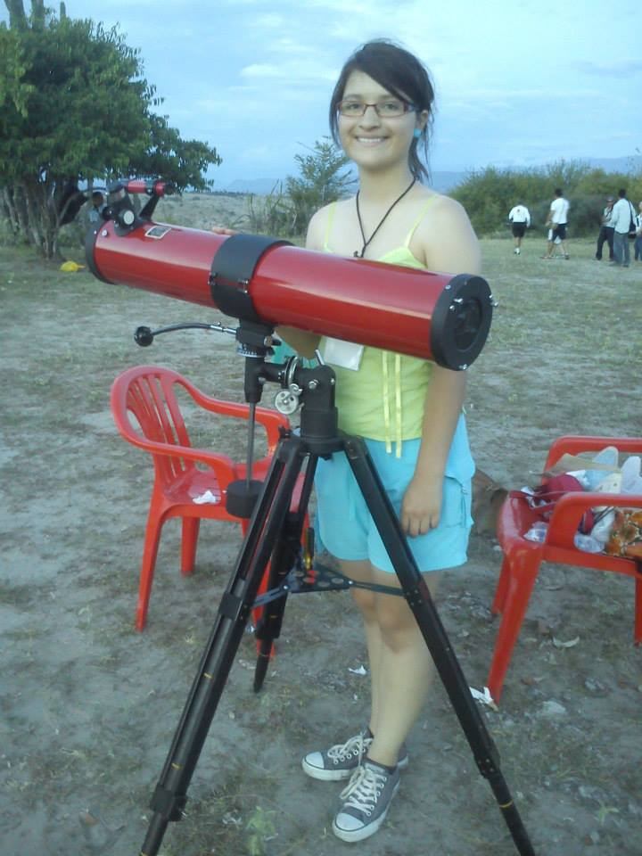
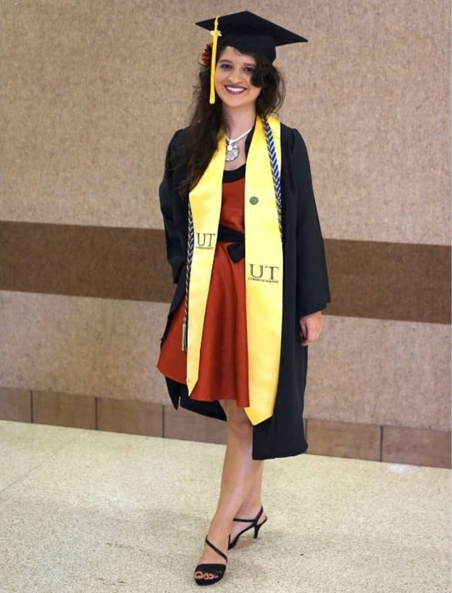
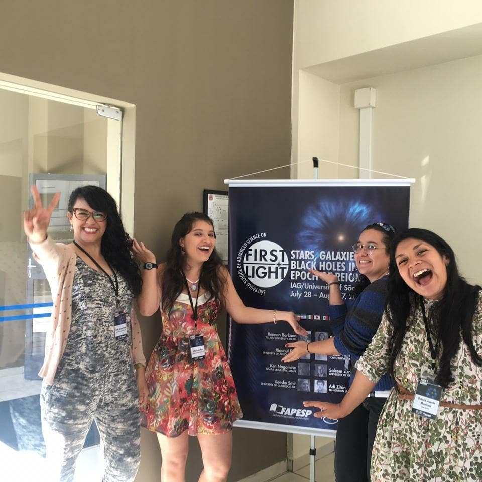
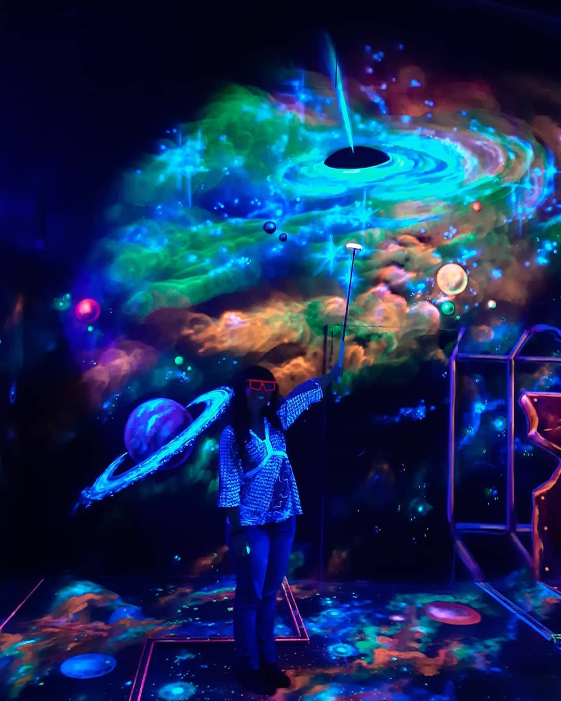

Nací en Bogotá, Colombia, y la primera película que me compraron mis papás en Betamax fue de hecho la serie 'Cosmos' de Carl Sagan.
Mientras crecía, veía a mi mamá trabajar como periodista y profesora universitaria, y a mi papá como astrónomo aficionado con su telescopio.
Mi abuelito me mostraba muchos libros, y juntos vimos mi primer eclipse solar parcial, mientras que mi abuelita me enseñó matemáticas hasta multiplicar y dividir.
Ahora parece bastante obvio por qué escogí estudiar astronomía, pero hay más. Como muchos niños, soñaba con ser
astronauta y trabajar para la NASA haciendo series como 'Cosmos', porque eso era lo que yo creía que hacían los astrónomos.
No fue sino hasta que cumplí 14 años que el panorama se empezó a aclarar. Estaba estudiando en el
Colegio Corazonista de Bogotá
y apenas empezaba a tomar clases de física y química. Ambos profesores me apoyaron mucho y me mostraron el camino
para estudiar ciencias naturales.
Al mismo tiempo, comencé a asistir a charlas públicas de astronomía ofrecidas por diferentes asociaciones de astronomía en Bogotá.
Muchos de los conferencistas eran profesionales colombianos en química, física o ingeniería que compartían
una pasión por la astronomía, pero sólo uno o dos habían estudiado astronomía en el exterior.
En mi último año de colegio, participé en las Olimpiadas Colombianas de Astronomía (IV OCA) y luego pasé a las
Olimpiadas Latinoamericanas de Astronomía y Astronáutica (V OLAA).

Estaba segura de que quería estudiar astronomía, así que me senté con mi mamá a buscar universidades, y entre más buscaba,
más claro me quedaba que tenía que salir de mi país. En ese entonces, sólo una universidad en Colombia había empezado a ofrecer el pregrado en astronomía,
y sólo un estudiante hacía parte de él y aún no se había graduado. Por lo tanto, irme a Estados Unidos se convirtió en mi mejor opción, y me enfoqué en esa meta.
A los 16 años y tan sólo un mes después de graduarme del colegio, me fui a Estados Unidos e hice parte de un programa de inglés que me guió en
todos los requisitos para aplicar a universidades americanas, desde los exámenes TOEFL y SAT hasta los ensayos de aplicación.
(Tengo más consejos sobre esto aquí.)
Un año después, de vuelta en Colombia en un soleado día de abril, fui aceptada en la Universidad de Texas en Austin, y se convirtió en el día
más feliz e increíble de mi vida.
Hasta ese momento, muchos amigos, familiares y conocidos me habían dicho muchas veces: "NO. Ella no va a poder entrar a una universidad americana,
nadie hace eso. ¿Cómo va a pagarla? ¿Siquiera puede conseguir trabajo? ¿Por qué no se queda en Colombia como todo el mundo?"
Por años me había acostumbrado a escuchar NO, así que este SÍ fue decisivo.
La matrícula de la universidad era realmente costosa; mi familia y yo no podíamos pagar mucho más que el primer semestre de mis estudios
y mi manutención. Sin embargo, pude aplicar a algunas becas disponibles para estudiantes internacionales en mi universidad. Entre las becas que gané
y mi trabajo como Asistente de Investigación de Pregrado (URA, en inglés), pude pagar la matrícula completa cada año y nunca me endeudé.
Trabajé como URA con el
Dr. Steven Finkelstein desde mi segundo semestre. Ahí descubrí mi pasión por estudiar el universo temprano, específicamente algunas
de las primeras galaxias que se formaron en los primeros 500 millones de años del
universo (o a corrimiento al rojo z ~ 9).

Crecí mucho, muchas veces a las malas, estando tan lejos de casa en una cultura diferente, pero muchas personas en UT me apoyaron durante todo el camino.
Estaré por siempre agradecida con mi supervisor, profesores, amigos, colegas, donantes de becas, personal administrativo y mi familia por ayudarme
y enseñarme a levantarme y echar pa'lante.
En UT tuve muchas oportunidades de mostrar mi investigación y también hice pasantías de verano para conocer más de la comunidad
astronómica tanto en Estados Unidos como en Europa. No fue sino hasta que me gradué con un B.S. en astronomía y
un B.S. en física a los 22 años que comencé a conocer a más colombianos estudiando astronomía y ciencias del espacio en el exterior.
Participé en la Escuela
First Light
en la Universidad de São Paulo, Brasil, donde conocí por primera vez a muchísimos más astrónomos latinoamericanos, ¡y quedé fascinada!
Hice nuevos amigos y me volví parte de las Colombianas Haciendo Investigación en Astrociencia
(CHIA)
y de la Red de Estudiantes Colombianos de Astronomía (RECA), donde ayudé a crear diferentes programas de educación en astronomía para la comunidad en Colombia.
Puedes leer más aquí.

Obtuve mi doctorado de la Universidad de Heidelberg como parte del Instituto Max Planck de Astronomía, con una beca del programa
International Max Planck Research School - Heidelberg.
Me especialicé en los primeros cuásares, que son agujeros negros supermasivos que viven
en el centro de algunas galaxias. Me concentré en los cuásares que se formaron dentro de los primeros mil millones de años del universo
(o a corrimiento al rojo z ≳ 6), y algunos de ellos son brillantes en longitudes de onda de radio, como
este. Pude trabajar con datos ópticos, del infrarrojo cercano y de radio de
telescopios terrestres y espaciales.
Disfruté mucho mi tiempo en Alemania, y luego pasé a mi primer postdoc en UCLA, donde lideré la colaboración internacional Borg-JWST usando algunos de los primeros datos del JWST del Ciclo 1 (lee más aquí). También me involucré más en análisis de aprendizaje automático (machine learning, ML) para clasificar galaxias y agujeros negros supermasivos en fase de acreción activa. Ahora soy postdoc en la Universidad de California, Berkeley, donde investigo galaxias lejanas y agujeros negros supermasivos.